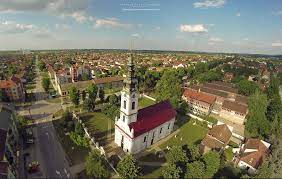

Име и презиме: Настасија Маливук
Одељење: IV1
Адреса: Родољуба Чолаковића 24
Телефон: 0621030479
Моја е-маил адреса: ОВДЕ
основно: ОШ"Вук Караџић"
средње: Гимназија "20. октобар"
будуће: ФТН биомедицинско инжењерство
Прошлост, садашњост, будућност
Бачка Паланка је градско насеље у Србији у општини Бачка Паланка у Јужнобачком окугу. Према попису из 2011. било је 28239 становника.
Површина: 579m2

Подручје бачкопаланачке општине простире се, у рељефном погледу, на свим морфолошким јединицана карактеристичним за Војводину, сем пешчаре. Поред Дунава је алувијална раван, односно рит, а то су управо најниже површине у рељефу Војводине. У нашем случају надморска висина ове површине износи око 80 m. Северно до рита налази се 3-5 m виша површина. Њу представља алувијална тераса коју је, као и претходну, наталожио Дунав. Ритови су угрожени при сваком високом водостају, због чега је у њима стамбена изградња забрањена. Алувијалну терасу, на којој је изграђена Бачка Паланка, угрожавају само екстремно високи водостаји. Од алувијалне терасе даље према северу простире се, за још 2-5 m виша степеница, лесна тераса, која представља део простране бачке лесне терасе.Поред десне обале Дунава, иза алувијалне равни или непосредно уз обалу нема лесне терасе, него се стрмим одсецима или косама издиже 20-30 m виша лесна површина, лесна зараван. Она представља део фрушкогорске лесне заравни. Још јужније, у атару Визића, присутни су огранци планинског масива Фрушке горе.Бачка Паланка на територији своје општине има периферни.
Пољопривреда је добро развијена али моћна Бачкопаланачка индустрија ипак је главни покретач града и околине. Три привредна гиганта Нектар сокови, Челаревска пивара и фабрика подних и зидних облога Таркет запошљавају неколико хиљада људи а поред њих као изузетно успешне компаније можемо навести Дунавпревоз, индустрију слада АД Малтинекс, месну индустрију АД Бачка – Бачка Паланка, металско предузеће Ковис БП, Мајевица, Платнер, Ениа, Фертил и многи други.Карађорђево и Младеново се налазе на локалном путу који се одваја од пута Бачка Паланка — Бач, између Бачке Паланке и Обровца и преко ових насеља води ка путу Бач–Бачко Ново Село. Поменимо још да се 1 km западно од Нештина одваја од Подунавског пута локални пут за Визић, тако да су сва општинска насеља добрим аутомобилским путевима повезана са општинским центром или се пак налазе на важним регионалним путним правцима, који их даље повезују са осталим деловима земље и Европе. Бачкопаланачко подручје пресеца и железничка пруга Нови Сад–Оџаци–Сомбор.
У насељу Бачка Паланка живи 23560 пунолетних становника, а просечна старост становништва износи 39,0 година (37,6 код мушкараца и 40,3 код жена). У насељу има 10051 домаћинство, а просечан број чланова по домаћинству је 2,92. Ово насеље је углавном насељено Србима (према попису из 2002. године), а у последња три пописа, примећен је пораст у броју становника.Површина општина Бачка Паланка износи 579 km². То је за око 100 km² више од просечне величине војвођанских општина, што значи да припада групи по површини већих општина у Војводини. Године 1991, на територији општине пописом је регистровано 58.835 становника, што је за око 14.000 више од војвођанског просека, тако да и у том погледу припада групи већих општина. Густина насељености је 101,6 становника по m², такође је већа од војвођанског просека (93,6). Општинска територија је неправилног облика, издужена у правцу север-југ. Њена дужина на линији Пивнице–Визић износи 40 km, а највећа ширина на линији Младеново–Челарево је 28 km, док просечна ширина износи 14,5 km.
Пет књига које препоручујем:
Десет омиљених песама Тејлор Свифт: